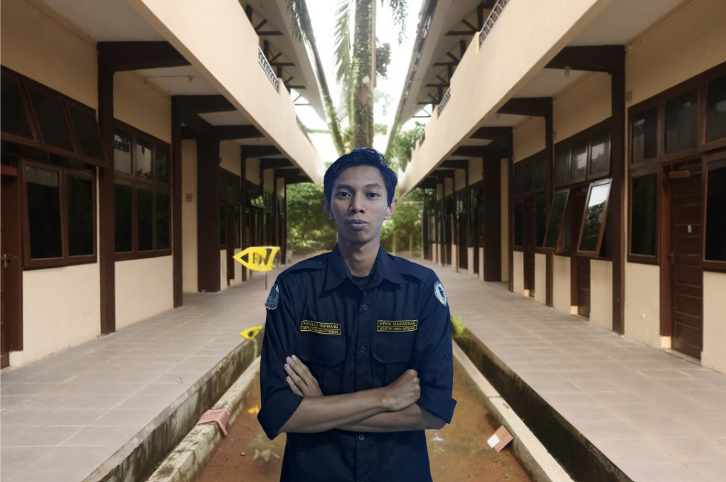
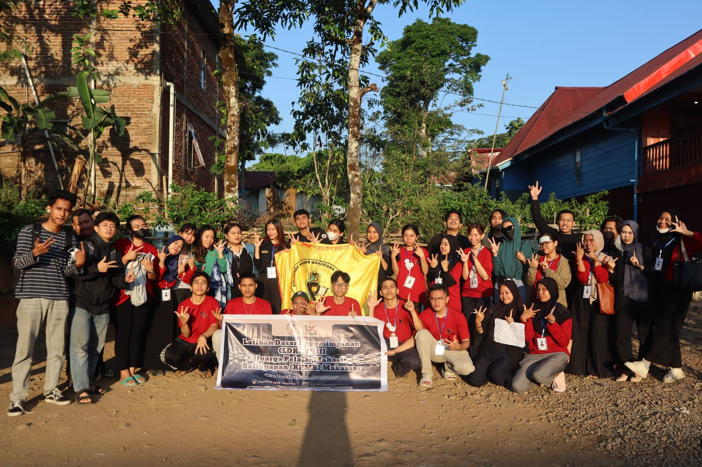
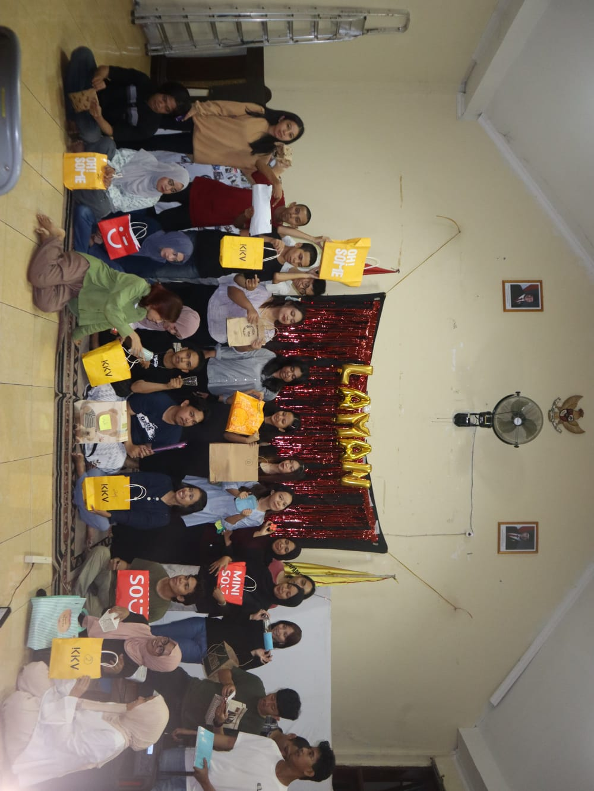
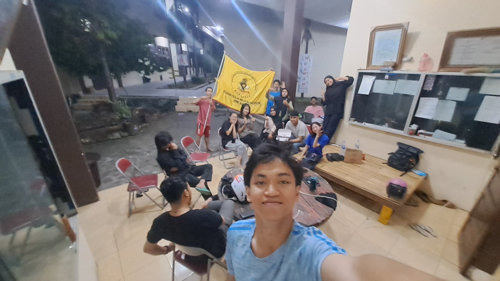
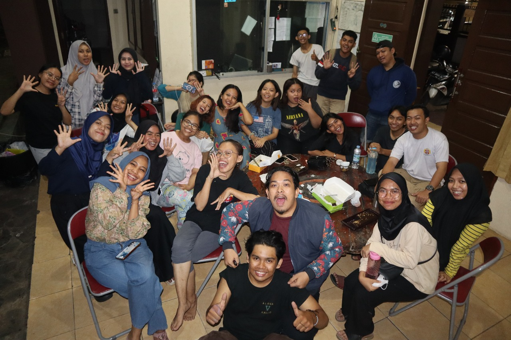
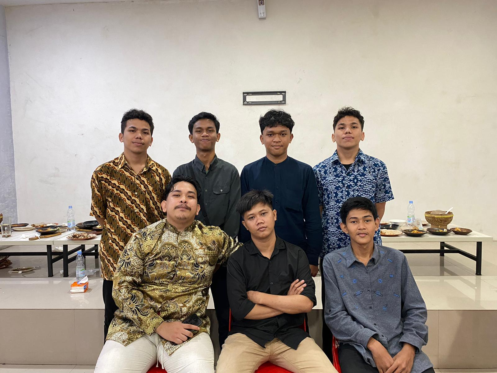
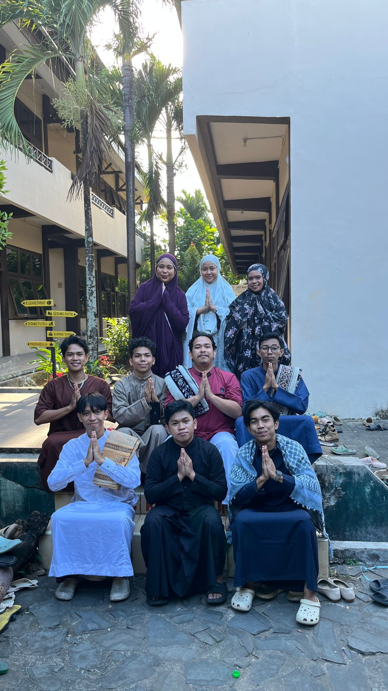
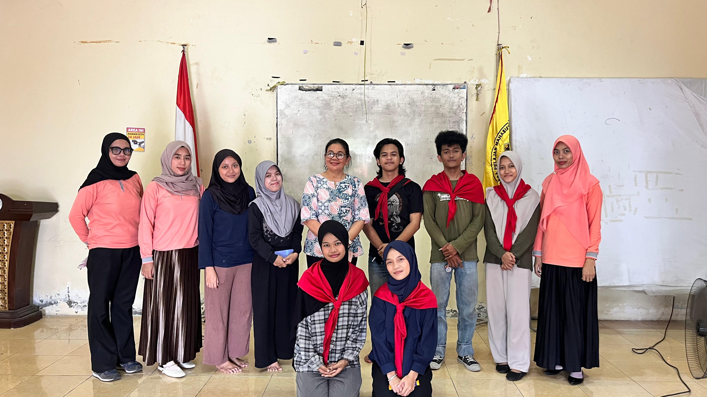

Struktur Pengurus

Ketua
Dhiyani Fadilatuh Iffah

Wakil Ketua
Adharian Nur Al Janni

Sekretaris
Marshela

Bendahara
Reza Anjelina Cahya

Koordinator PSDM
Hartika Julianty Nursuhada

Unit Manuntung Study Club
Amanda Nur Fadilah

Unit Manuntung English
Daniel Putra Natama Lumban Gaol

Koordinator Humas
Achmad Nurwahid

Unit Kemahasiswaan dan Informasi Komunikasi
Samuel Putra Natama Lumban Gaol

Unit Media dan Kreatif
Afkhar Fahry Wardana

Kepala Biroh
Dewi Hardiani
Unit Keuangan
Ermi

Unit Inventari dan Logistik
Andi Miftahul Jannah
Divisi KPMB

Divisi PSDM
Koordinator: Hartika Julianty

Divisi Humas
Koordinator: Akhmad Nurwahid

Divisi Biro
Koordinator: Dewi Hardiani
Program Kerja Unggulan
Pembinaan Anggota
Pelatihan kepemimpinan dan pengembangan soft skill.
Kegiatan Sosial
Bakti sosial dan aksi kemanusiaan.
Kegiatan Budaya
Pengenalan budaya Balikpapan melalui event seni.
Berita & Update
KPMB Gelar Makrab 2026
Makrab sukses mempererat kebersamaan anggota baru.
Kunjungan Sosial ke Panti
Kegiatan sosial bersama anggota dan alumni.
Galeri Kegiatan







Pertanyaan Umum
Siapa yang bisa bergabung di KPMB?
Mahasiswa asal Balikpapan yang kuliah di Makassar.
Apa tujuan organisasi ini?
Membangun kebersamaan mahasiswa daerah.
Database KPMB
| Nama | Kampus | Angkatan |
|---|---|---|
| Nur Ilmi Zulfiana, S.Kep | - | - |
| Rafika Fitriah, S.Farm, Apt | - | - |
| Andriansyah, ST | Universitas Muslim Indonesia | - |
| Beldianur, ST | Universitas Muslim Indonesia | - |
| Nur Afni Kapitalola , S.KM | Universitas Hasanuddin | - |
| Rizky Emilia Putri | Universitas Muslim Indonesia | - |
| Muhajir Masli Saputra, S.Kom | - | - |
| Chiwang | - | - |
| Amrullah Muslimin | AMI AIPI Makassar | - |
| Ahmad Ramdani | - | - |
| Muchtaj Catur Saadulah, S.Kom | - | - |
| Piah Indrawati, SE | Universitas Hasanuddin | - |
| Harwuliana, ST | Universitas Hasanuddin | - |
| Gugun | Universitas Hasanuddin | - |
| Herman Fardillah S.T. | - | - |
| Rahman Uriansyah, S.Ag | Universitas Islam Negeri Alauddin Makassar | - |
| Rusdiana Rusli, SS | Universitas Muslim Indonesia | - |
| Drg. Siti Nurwahidah Sri Lestari (Kak Tari) | Universitas Muslim Indonesia | - |
| Kanda Julak | - | - |
| Andi Irwan Bachtiar | - | - |
| Syafruddin, S.Sos | Universitas Hasanuddin | - |
| Adip | Universitas Hasanuddin | - |
| Khairul Akram | Universitas Islam Negeri Alauddin Makassar | - |
| Andi Batara Soraya | Universitas Hasanuddin | - |
| Dasriani | STIKES | - |
| Asdedy | STMIK DP | - |
| Dheny Agustamb | Universitas Hasanuddin | - |
| Diko Alvika | Universitas Muslim Indonesia | - |
| Edy Rachmat | Universitas Islam Negeri Alauddin Makassar | - |
| Eheskel | Universitas Hasanuddin | - |
| Andi Faisal Daya | Universitas Hasanuddin | - |
| Frizka Oktavianda Alam | Universitas Hasanuddin | - |
| Guntur Gunawan | Universitas Hasanuddin | - |
| Herman Muchtar, SE | Universitas Hasanuddin | - |
| Hijriati | STMIK DP | - |
| Sarifah Rahel | Universitas Hasanuddin | - |
| Hamzah Umar | Universitas Hasanuddin | - |
| Rahman Wahyudin | Universitas Muslim Indonesia | - |
| Ucok | - | - |
| Irma Ramadhani, SE | Universitas Hasanuddin | - |
| Irwansyah | Universitas Muslim Indonesia | - |
| Andi Irwan Bachtiar | STMIK Handayani Makassar | - |
| Jasrah Yasir | UNIV. 45 | - |
| Irfan Junadi | Universitas Muslim Indonesia | - |
| Kasfar Fitriansyah | Universitas Hasanuddin | - |
| Hendra Maianto | Universitas Hasanuddin | - |
| Andien | Universitas Hasanuddin | - |
| Raodah Salam | Universitas Hasanuddin | - |
| Basir Daud | Universitas Hasanuddin | - |
| Budiarto | - | - |
| Muslihuddin Arif (Oji) | Universitas Islam Negeri Alauddin Makassar | - |
| Herman Afkani/bang opus | Universitas Veteran Republik Indonesia | - |
| Reni Syarifah | Universitas Negeri Makassar | - |
| Dr. Sabaranuruddin, Mfil | Universitas Islam Negeri Alauddin Makassar | - |
| Maulid. A. Maulana/Ucok | POLTEK | - |
| winda | Universitas Hasanuddin | - |
| Windi Tambuku | STIKES | - |
| Windita. A | Universitas Hasanuddin | - |
| Wiwi Samad | Universitas Muslim Indonesia | - |
| Yuliana/Yuli PEMKOT | Universitas Hasanuddin | - |
| Hasanuddin | Universitas Hasanuddin | 2005 |
| Ariani | Universitas Muslim Indonesia | - |
| Hidayat Djamal, S.Kom | - | - |
| Tytin | - | - |
| Ula | - | - |
| Nur Ulis | - | - |
| Ijul | - | - |
| Zulfian, ST | - | - |
| Ferdianto | - | - |
| Ardiansyah Wijaya | Universitas Muslim Indonesia | - |
| Mursyida Rusdy | Universitas Negeri Makassar | - |
| Hilman Tauhik | Universitas Hasanuddin | - |
| Totok Laupe Parenrengi | STIMIK DIPA | - |
| Cita Muliasari | Universitas Negeri Makassar | - |
| Nurul Hasanah | Universitas Hasanuddin | - |
| Indra Prakasa | Poltekes | - |
| Karya Nugra Dewi | Universtas Negeri Makassar | - |
| Sherly Ariani | Universitas Hassanuddin | - |
| Salmiyah | Universitas Hassanuddin | - |
| M. Asyharuddin | Universitas Muslim Indonesia | - |
| Winda Julia | Universitas Hassanuddin | - |
| Rafikatul Huda. M | Universitas Muslim Indonesia | - |
| Firman | Universitas Hassanuddin | - |
| Nur Mulia Fitri | Universitas Muslim Indonesia | - |
| Andi Nuril. R | Universitas Hassanuddin | - |
| Husna Dewi Nengsih | STIKES Mega Rizky | - |
| Lita Sari Cahaya Ningsih | STIKES Nani Hassanuddin | - |
| Yunita Angraeni Arana | PoliTeknik Kesehatan | - |
| Aqil Haq | Universitas Muslim Indonesia | - |
| Abdul Sakur | Universitas Islam Negeri Alaudin | - |
| Indah Puspita Sari | Universitas Muhammadiyah Makassar | - |
| Caya Sukman Mattalitti | Universitas Negeri Makassar | - |
| Ade Irma | Universitas Fajar | - |
| Suhartina | Universitas Hassanuddin | - |
| N. Arif Ibnu Zaid | STMIK AKBA | - |
| Tsania Himayanti | Universitas Hasanuddin | - |
| Annisya Nurul F | Universitas Muhammadiyah Makassar | - |
| Rizky Aulia | Universitas Muhammadiyah Makassar | - |
| Angelia Rizky Pelealu | STIKES Graha Edukasi | - |
| Deva Febi Fortuna | UIN Alauddin Makassar | - |
| Siti Nurhaliza Bachril | STIKES Graha Edukasi | - |
| Ridho Fariz | PIP Makassar | - |
| Angga Maulana Saputra | Universitas Negeri Makassar | - |
| Muh. Ihwan Zufikar | Universitas Fajar | - |
| Muhammad Rizaldi | Politeknik Maritim AMI | - |
| Dwi Mailana | Politeknik Sandi Karsa | - |
| Joshua Melvin Arung La'bi | Universitas Hasanuddin | - |
| Rifki Reynaldi Wahid | Politeknik Negeri Ujung Pandang | - |
| Sarfia Abdul Aziz | Universitas Islam Negeri Alauddin Makassar | - |
| Rano | - | - |
| Noor Wahyudi | - | - |
| Denni Mappa | - | - |
| Andifo R. P. | - | - |
| Andin | - | - |
| Ernawati | - | - |
| Faradillah Rizky | - | - |
| Andi Fikri Aditya | - | - |
| Haikal Ibnu | - | - |
| Mochammad Adriyanto | - | - |
| Mukhlis Ridha Pratama | - | - |
| Nur Harmila Sari | - | - |
| Ismail (Ogi) | - | - |
| Putra Mahendra | - | - |
| Rahmat Suci | - | - |
| Rizadwis | - | - |
| Said Andri Renaldi | - | - |
| Slamet | - | - |
| Susie | - | - |
| Syarif | - | - |
| Tahmil | - | - |
| Wiwin | - | - |
| Yusuf | - | - |
| Jerman | - | - |
| Yasir (Acci) | - | - |
| Ririn | - | - |
| Risty Fatmawati Lumabiang | Universitas Muslim Indonesia | 2022 |
| Ilham Nur Pratama Rahman | Universitas Muhammadiyah | 2018 |
| - | Universitas Islam Negeri Alaudin | 2017 |
| Aprillia Umsiani | UIN Alauddin Makassar | 2018 |
| Amirul Mukminin Parenrengi | Universitas Hassanuddin | 2018 |
| Kenny Dio Bandaso | Universitas Hassanuddin | 2018 |
| Aditya Batsen | Politeknik Ilmu Pelayaran Makassar | 2018 |
| Vinsky Sandeana Polulungan | Universitas Kristen Indonesia Paulus | 2019 |
| Hasrianti | Universitas Islam Makassar | 2018 |
| Rani Safira | Universitas Muslim Indonesia | 2019 |
| Dwi Maryani | Universitas Muslim Indonesia | 2019 |
| Evania Intan P. Makamban | Universitas Hasanuddin | 2019 |
| Deamitri Nadia Toding | Universitas Hasanuddin | 2019 |
| Sandrina Putri H | Universitas Hasanuddin | 2019 |
| Dhea Prasetia | Universitas Hasanuddin | 2019 |
| Robyathul Adawiyah | Universitas Negeri Makassar | 2019 |
| Lintar Alam | Universitas Hasanuddin | 2020 |
| M. Sandy Fajar | Universitas Muslim Indonesia | 2019 |
| Nalche Kechia Rangan | Universitas Hassanuddin | 2017 |
| Nurul Thalia Salsabillah | Universitas Megarezky Makassar | 2017 |
| Orchinella Glory Eunike | Universitas Hasanuddin | 2019 |
| Zhafirah Permata Sari (Kak Fira) | Universitas Hasanuddin | 2019 |
| Kintara Putri Amriana Sahidu | Universitas Hasanuddin | 2020 |
| M.Dhani S | AMI AIPI Makassar | 2019 |
| Noer Madinah Tulmunawwara | Universitas Hasanuddin | 2019 |
| Indra Setyawan | Universitas Hasanuddin | 2019 |
| Harditya Aulia Rahman | Politeknik Negeri Media Kreatif Makassar | 2020 |
| Tri Wana Al Fandi | Universitas Hasanuddin | 2019 |
| Himmatul Aliyah | Universitas Hasanuddin | 2019 |
| Sri Ayu Lestari (Kak Ayu) | Universitas Megarezky Makassar | 2019 |
| Putri Febrian Rahmadani | Universitas Hasanuddin | 2019 |
| Putu Bagus Swastika | Universitas Dipanegara | - |
| Muslim Hidayatullah | - | - |
| Jamaludin Nur | - | - |
| Siswadi | - | - |
| Tajuddin Noor | - | - |
| Puji Setiyono | - | - |
| Wahyullah Junaedi | - | - |
| Zein Alqadri | - | - |
| Agus Wahiyudin | - | - |
| Yulianty | - | - |
| Sufriady Syam | - | - |
| Aris Hamid | - | - |
| Dede | - | - |
| Fadil | - | - |
| Muli Ati | - | - |
| Citra | - | - |
| Suci Khairayun Hisan | Universitas Negeri Makassar | 2018 |
| Feryansyah Akhbar Syamsir | Universitas Muslim Indonesia | 2018 |
| Jumadila Purnama | Universitas Negeri Makassar | 2020 |
| Arpah | Universitas Hasanuddin | 2020 |
| Nabilah Luthfiyyah | Unniversitas Muhammadiyah Makassar | 2020 |
| Muhammad Fathurrahman | Universitas Hassanuddin | 2017 |
| Rifah Hijriyani F. | Universitas Hassanuddin | 2021 |
| Muhammad Rachmatullah | Universitas Hasanuddin | 2022 |
| Jessy Ramba Tangkedatu | Universitas Hasanuddin | 2020 |
| Pratiwi Safira Ilham | Universitas Hassanuddin | 2022 |
| Nur Basith Kadir | Universitas Hassanuddin | 2018 |
| Abdillah Moriffilos Rizaluddin | Universitas Hasanuddin | 2023 |
| Husnul Khotimah | Universitas Negeri Makassar | 2019 |
| Cynthia Angel Erika | Universitas Hasanuddin | 2020 |
| Shelvina Adella | Universitas Hasanuddin | 2023 |
| Rachmat Fajar | Universitas Hasanuddin | 2023 |
| Gabriel Samudra | Universitas Hasanuddin | 2019 |
| Siti Halifah | Universitas Islam Negeri Alauddin Makassar | 2019 |
| Muhammad Fauzan | Universitas Islam Negeri Alaudin | 2018 |
| Andi Intan Yulita | Uin Alauddin Makassar | 2021 |
| Nama | Kampus | Angkatan |
|---|---|---|
| Waode Sitti Alif Mu'arifah | Universitas Hassanuddin | 2018 |
| Mufti Ali Hanif | Universitas Hasanuddin | 2019 |
| Satria Aji Ibnu Salim | Universitas Hasanuddin | 2019 |
| Andi M. Murfid Muqsith | Universitas Bosowa | 2019 |
| Abdurohim | Universitas Muhammadiyah Makassar | 2020 |
| Zulhijriana Nur | Universitas Negeri Makassar | 2021 |
| Muh. Resky Ramadhan | Universitas Negeri Makassar | 2022 |
| Muhammad Khadafi Karim Abdullah | Universitas Islam Negeri | 2022 |
| Yuniar Angraeni | Universitas Negeri Makassar | 2022 |
| Andi Miftahul Jannah | Universitas Hasanuddin | 2023 |
| Verawati | Universitas Negeri Makassar | 2023 |
| Ermi | Universitas Negeri Makassar | 2023 |
| Dewi Hardiani | Institut Ilmu Kesehatan Pelamonia | 2023 |
| Nolapetricia Mangngi Tulungallo | Universitas Hasanuddin | 2023 |
| Reza Anjelina Cahya | Universitas Hasanuddin | 2023 |
| Dhiyani Fadilatul Iffah | Universitas Hasanuddin | 2023 |
| Marselah | Universitas Negeri Makassar | 2023 |
| Jihan Assyfa Alyaa | Universitas hasanuddin | 2023 |
| Andi Nadila | Universitas Hasanuddin | 2024 |
| Amanda Nur Fadilah | Universitas Hasanuddin | 2024 |
| Akhmad Nurwahid | Universitas Muslim Indonesia | 2024 |
| Muhammad Aksa Akbar | Universitas Hasanuddin | 2024 |
| Samuel Putra Natama Lumban Gaol | Universitas Atmajaya Makassar | 2024 |
| Daniel Putra Natama Lumban Gaol | Universitas Hasanuddin | 2023 |
| Afkhar Fakhriy Wardana | Universitas Hasanuddin | 2024 |
| Adharian Nur Al Janni | Universitas Bosowa | 2024 |
| Athifah Mardhiyah | Universitas Hasanuddin | 2024 |
| Dinny Pasyha Bandaso | Universitas Kristen Indonesia Paulus | 2024 |
| Teddy Wahyudi | Universitas Negeri Makassar | 2025 |
| Naila Putri | Universitas Hasanuddin | 2025 |
| Muhammad Ryanto | Universitas Muslim Indonesia | 2025 |
| Andi Arriva Ayudiah Rahman | Universitas Hasanuddin | 2025 |
| Muhammad Rizqi Nur Hidayat | Universitas Hasanuddin | 2025 |
| Muhammad Farham | Universitas Indonesia Timur | 2025 |
| Chaterine Yohana Boro | Universitas Hasanuddin | 2025 |
Visi & Misi KPMB Makassar
Visi
Menjadi wadah kebersamaan mahasiswa Balikpapan di Makassar yang mampu membangun solidaritas, mengembangkan potensi anggota, serta memberikan kontribusi positif bagi masyarakat dan daerah.
Misi
1. Membangun rasa kekeluargaan antar anggota.
2. Mengembangkan potensi akademik dan non akademik.
3. Menyelenggarakan kegiatan sosial dan kemahasiswaan.
4. Menjadi wadah komunikasi mahasiswa Balikpapan di Makassar.
Nilai Organisasi KPMB
Kekeluargaan
Kekeluargaan merupakan nilai yang menekankan pentingnya hubungan yang hangat, saling menghargai, dan saling mendukung antar anggota organisasi. Melalui kekeluargaan, setiap anggota merasa menjadi bagian dari satu keluarga besar yang saling menjaga dan membantu satu sama lain.
Solidaritas
Solidaritas adalah rasa kebersamaan dan kesediaan untuk saling membantu dalam mencapai tujuan organisasi. Nilai ini menumbuhkan sikap saling percaya, saling menghargai, serta memperkuat persatuan antar anggota.
Integritas
Integritas berkaitan dengan kejujuran, tanggung jawab, dan konsistensi antara perkataan dan tindakan. Dengan menjunjung tinggi integritas, setiap anggota diharapkan mampu menjaga kepercayaan serta menjalankan tugas dengan penuh tanggung jawab.
Kepemimpinan
Kepemimpinan adalah kemampuan untuk mengarahkan, memotivasi, dan menginspirasi orang lain dalam mencapai tujuan bersama. Nilai ini mendorong setiap anggota untuk berani mengambil inisiatif serta memberikan kontribusi positif bagi organisasi.